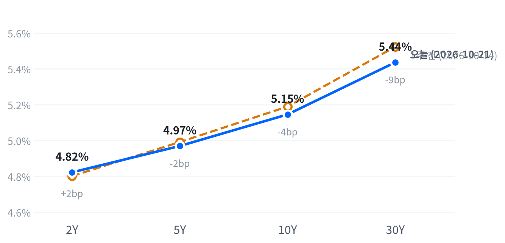

슈퍼마이크로의 매출 전망 상향과 SpaceX발 GPU 수요 기대에 AI 하드웨어가 지난주 매도에서 반등해 지수를 끌었다. 넷플릭스·알파벳은 커뮤니케이션 업종을 끌어내렸고, 금리는 2년물이 더 올라 커브가 평탄해졌다.
이날 반등은 수요 쪽 증거에 따른 재평가라고 판단하지만, 약한 AI 차입자의 신용 부담은 그대로다. 장 마감 뒤 메타가 내놓은 설비투자 범위에 AI 관련주가 10월 22일 종가로 어떻게 반응하는지가 다음 확인 자료다.
지난주 매도에 밀렸던 AI 하드웨어가 반등하며 이날 시장을 주도했다. 슈퍼마이크로가 매출 전망을 크게 올렸고, SpaceX 실적과 머스크의 GPU 가동 계획 발언이 겹쳤다. AI 인프라 다섯 종목(마벨·코히런트·루멘텀·GE 버노바·버티브)은 평균 3.18% 올라 S&P보다 2.61%p 강했다. 반대편에서는 넷플릭스의 가이던스 하회와 알파벳 약세가 커뮤니케이션 업종을 끌어내렸다.
이 반등은 기술적 되돌림보다 수요 쪽 증거에 따른 재평가에 가깝다고 본다. 슈퍼마이크로의 새 매출 전망은 LSEG 컨센서스(152.3억 달러)를 크게 넘었고, 장 마감 뒤 메타는 2026년 설비투자 범위의 하단을 올리고 상단을 유지했다. 약한 차입자의 신용 부담은 풀리지 않았다. CoreWeave의 5년 CDS가 1,067bp까지 넓어졌다는 보도가 같은 날 나왔다. 가장 강한 반론은 지난주 급락 뒤의 숏커버와 저가 매수다. 신용 부담이 그대로인 채 반등했다면 오래가기 어렵다. 시장이 옵션 등으로 어느 정도의 반등을 가격에 담았는지는 측정하지 못해, 기대와의 차이는 알 수 없다.
반도체·AI 인프라·전력망 테마에서 이날 증거는 하이퍼스케일러 수요가 온전하다는 판단을 뒷받침한다. 하루 반등만으로 3개월 상대수익률의 방향이 바뀌었다고 보기는 이르다. 메타 발표에 대한 10월 22일 종가 반응을 본 뒤 판단하고, 이날은 새 아이디어를 내지 않는다. 테마 ETF와 개별 하드웨어 종목의 비용·유동성을 비교할 자료도 없다. 금리 쪽에서는 2년물이 3.6bp 올라 커브가 평탄해졌다. 이 평탄화를 12월 인상 반영으로 보면 단기 금리는 높게 머물고, 유틸리티·부동산·금융 같은 금리 민감 업종의 부담도 FOMC까지 남는다.
10월 22일 종가 기준으로 AI 인프라 다섯 종목 단순평균 등락률에서 S&P 등락률을 뺀 값이 -2.31%p 이하이면 수요 재평가 판단은 약해지고, 지난주 매도 뒤의 기술적 반등을 우선 설명으로 본다. 커브는 10월 28일 FOMC 당일 종가 기준 2년물·10년물 금리차가 38.8bp 이상으로 되돌아가면 정책 주도 해석이 약해지고, 장기물 숏커버와 입찰 수요의 수급 효과를 우선 설명으로 본다. 다음 분기점은 10월 22일 웨스턴디지털·블룸에너지 실적과 5년물 입찰, 28일 FOMC다.
출처: Reuters, CNBC
| 지수 | 종가 | 등락률 | 기준일 |
|---|---|---|---|
| 닛케이225 | 64,075.42 | -1.30% | 10월 20일 |
| 항셍 | 23,867.74 | -1.32% | 10월 20일 |
| 상해종합 | 3,735.37 | +0.12% | 10월 20일 |
| DAX | 25,304.42 | -0.06% | 10월 20일 |
| FTSE100 | 10,752.88 | +0.19% | 10월 21일 |
| 유로스톡스50 | 6,121.66 | -0.38% | 10월 20일 |
| VIX | 16.68 | -3.64% | 10월 21일 |
FTSE100과 VIX는 10월 21일 값이고, 나머지는 들어온 마지막 종가인 10월 20일 값이다.
아시아는 미국과 엇갈렸다. 닛케이(-1.30%)와 항셍(-1.32%)이 내려 세 지수가 평균 0.83% 내렸지만 미국은 올랐고, 상해종합은 0.12% 올라 지역 안에서도 갈렸다. 유럽은 평균 0.08% 내린 보합이었고, FTSE100이 오르는 동안 유로스톡스50은 내려 역시 지역 안에서 갈렸다.
야간 선물은 전일 저녁에 고점을 찍고 새벽에 밀렸다. S&P 선물(ES)은 18:00(ET) 7,793이 고점, 05:00 7,757이 저점이었다. 나스닥 선물(NQ)은 20:30 30,010까지 올랐다. 장전에는 슈퍼마이크로의 예비 매출 상향에 델·HPE가 4% 넘게 올랐고, 머스크의 GPU 가동 계획 발언이 엔비디아 강세 재료로 보도됐다. 현물은 S&P +0.31%, 나스닥 +0.69%, 러셀2000 +0.25%의 갭으로 상승 출발했다.
S&P·나스닥·러셀2000 세 지수 모두 하루 범위의 중간에서 끝났다. 마감 무렵 매수와 매도 어느 쪽으로도 힘이 쏠리지 않았다.
저점권·고점권 경계는 최근 2,256거래일의 일간 종가 위치 이력으로 다시 잰 기준이다.
이날 지수는 AI 하드웨어가 움직였다. 슈퍼마이크로 전망 상향에 서버 업체가 함께 올랐고, 오후에는 버티브가 엔비디아와 AI 팩토리 인프라를 공동 발표한 뒤 4% 넘게 올랐다. 반대편에서는 넷플릭스와 알파벳이 커뮤니케이션 업종을 끌어내렸고, 헬스케어는 애벗·써모피셔·다나허 실적이 몰려 업종 안에서 종목이 갈렸다. 장 마감 뒤 메타는 3분기 매출이 26% 늘어난 646억 달러라고 발표해 시간외에서 올랐다. 테슬라는 EPS가 추정치를 넘었지만 순이익이 29% 줄었고, IBM도 예상을 넘는 3분기 실적을 냈다.
출처: Reuters, StockStory, TradingKey, Investing.com, Fortune, CNBC
| 지수 | 종가 | 등락률 |
|---|---|---|
| 나스닥 | 26,702.86 | +1.05% |
| S&P500 성장주 | 140.99 | +0.74% |
| 다우존스 | 52,856.09 | +0.69% |
| S&P500 | 7,757.17 | +0.58% |
| S&P500 가치주 | 238.05 | +0.36% |
| 러셀2000 | 2,781.02 | +0.27% |
| 섹터 | 등락률 |
|---|---|
| 기술 | +1.67% |
| 산업재 | +0.91% |
| 금융 | +0.57% |
| 유틸리티 | +0.29% |
| 에너지 | +0.28% |
| 소재 | +0.18% |
| 경기소비재 | +0.03% |
| 헬스케어 | -0.49% |
| 필수소비재 | -0.73% |
| 부동산 | -0.76% |
| 커뮤니케이션서비스 | -1.11% |
AI 하드웨어 반등에 나스닥이 1.05% 올라 26,703으로 마감했다. S&P500은 0.58% 오른 7,757로, 최근 2년(504거래일) 가운데 이보다 높았던 날이 12일뿐인 자리다. 다우는 0.69% 올라 52,856이 됐고, 러셀2000은 0.27% 오르는 데 그쳤다. 성장주(+0.74%)가 가치주(+0.36%)를 앞서, 전일의 가치주 우위가 하루 만에 뒤집혔다.
지수는 장 초반에 밀렸다가 되돌렸다. S&P는 10:00(ET) 시가보다 0.35% 낮은 7,709까지 내린 뒤 오후에 7,770까지 올랐고, 엔비디아도 같은 시각 1.49% 밀렸다가 마감 무렵 고점권으로 올라왔다. 10:00 저점을 설명하는 재료는 확인되지 않았다. 러셀2000은 개장 직후가 고점이었고 오후 늦게 저점을 찍어, 대형 기술주의 회복을 따라가지 않았다.
지수 상승은 사실상 기술 업종 혼자 만들었다. 추정 기여도로 기술이 0.56%p를 보태 지수 상승폭과 거의 같았고, 커뮤니케이션이 0.14%p를 덜어냈다. 금융(0.06%p)과 산업재(0.05%p)가 조금씩 보탰고, 업종 합으로 설명되지 않는 부분은 0.09%p다. 산업재 안에서는 GE 버노바(+4.00%)와 버티브(+4.22%)가 올라 전력망 관련주의 반등이 업종을 받쳤다.
추정 기여도는 업종 비중을 직접 받지 않아, 최근 252거래일 지수·업종 수익률로 추정한 비중을 곱한 값이다. 소재와 부동산은 비중을 추정할 수 없어 빠졌다.
마감이 하루 범위 가운데였고 VIX가 16.68로 평범한 수준에 머물러, AI 하드웨어 한 갈래의 반등을 지수 전반의 위험선호 회복으로 보기는 이르다. 필수소비재·부동산·헬스케어 같은 방어 업종은 내렸다. 헬스케어에서는 애벗이 영양 사업 분사 계획과 함께 연간 비교매출 성장 전망을 낮춰 3% 안팎 내렸고, 써모피셔와 다나허는 장전 약세를 딛고 장중에 올랐다는 보도가 나왔다.
출처: TradingKey, Investing.com
| 만기 | 종가(10월 21일) | 전일比(bp) | 1주 전(10월 14일) | 주간 변화(bp) |
|---|---|---|---|---|
| 2Y | 4.823% | +3.6 | 4.802% | +2.1 |
| 5Y | 4.970% | +3.6 | 4.992% | -2.2 |
| 10Y | 5.146% | +2.9 | 5.190% | -4.4 |
| 30Y | 5.437% | +1.2 | 5.524% | -8.7 |
금리는 단기물이 더 올랐다. 2년물이 3.6bp 오른 4.823%, 30년물은 1.2bp 오른 5.437%로 끝났다. 10년물은 2.9bp 오른 5.146%로, 최근 2년(504거래일) 가운데 이보다 높았던 날이 15일뿐인 고점권에 있다.

네이버 국채 종가, 전 만기 10월 21일 기준. 1주 전(10월 14일)과 비교하면 2년물은 2.1bp 오르고 30년물은 8.7bp 내려, 장기물 하락이 이끈 불 플래트닝이다.
하루로는 단기물이 더 오른 베어 플래트닝이다. 2s10s는 32.3bp, 5s30s는 46.7bp로 둘 다 1주 전보다 6.5bp 좁아졌다. 10월 7일 57bp이던 2년물·10년물 금리차가 2주 만에 이 자리까지 줄었다는 분석도 나왔다.
2년물을 밀어 올린 새 재료는 확인되지 않았다. CME FedWatch를 전한 집계로 12월 회의까지 인상할 확률은 88~94%로 높은 채 유지됐고, 단기물은 그 기대를 담고 있다. 20년물 입찰(130억 달러)은 낙찰 금리가 발행 전 거래 금리보다 0.9bp 높았고 간접 낙찰 비중이 58.2%로 최근 평균(65.2%)에 못 미쳐 혼조라는 평가를 받았다. 그런데도 30년물 종가 상승은 작아, 입찰 뒤 장기물 매도가 번지지는 않았다. 일간 종가만 있어 입찰 직후의 반응은 알 수 없다.
이 평탄화는 정책 경로가 주도한다고 본다. 단기물은 12월 인상을 반영해 높게 머물고, 장기물은 9월 고용 +2.9만 명과 주택 지표 부진이 만든 성장 둔화 우려에 묶여 있다. 같은 방향의 해석을 낸 분석은 10월 초 10년물 공매도가 쌓인 뒤의 숏커버와 10월 7~8일 입찰 호조도 근거로 들었다. 이 수급 설명이 더 맞다면 포지션 정리가 끝난 뒤에는 정책 확률이 그대로여도 커브가 다시 가팔라진다. 명목금리를 실질금리와 기대인플레로 나눈 이날 자료를 받지 못해, 장기물 움직임의 내역은 나눌 수 없다.
출처: FXStreet, FXEmpire, investingLive, Helious, Investing.com
| 통화쌍 | 종가 | 등락률 | 기준일 |
|---|---|---|---|
| DXY | 101.696 | -0.03% | 10월 21일 |
| USD/KRW | 1,325.73 | -0.00% | 10월 21일 |
| USD/JPY | 158.195 | -0.04% | 10월 21일 |
| EUR/USD | 1.1237 | -0.01% | 10월 21일 |
달러는 거의 움직이지 않았다. 달러지수는 0.03% 내린 101.696, 엔/달러는 158.195엔, 유로/달러는 1.1237로 마감했다. 원/달러는 1,326원으로 전일과 사실상 같았고, 비교 기간을 통틀어 가장 낮은 자리에 머물렀다.
2년물 금리가 오른 날이라 금리차는 달러를 받쳤지만, 기술주로 위험선호가 돌아오며 안전자산 수요가 줄어 두 힘이 상쇄됐다고 본다. 엔/달러는 08:00(ET) 157.832엔으로 그날 저점을 찍은 뒤 오후에 158엔대 위로 되올라, 미국 금리 상승을 조금씩 따라갔다.
원/달러의 위치는 최근 2년(504거래일) 종가 기준이다. 환율은 뉴욕 16:00 ET 가격, 전 거래일 같은 시각 대비다.
| 품목 | 종가 | 등락률 |
|---|---|---|
| WTI | $97.70 | -0.55% |
| Brent | $109.64 | +0.41% |
| 천연가스 | $2.775 | -7.75% |
| 금 | $4,152.50 | +0.33% |
천연가스가 7.75% 급락해 2.775달러로 마감했다. 유가는 장중 크게 흔들렸지만 종가 변화는 작았다. WTI는 0.55% 내린 97.70달러로, 최근 2년(504거래일) 가운데 이보다 높았던 날이 36일뿐인 높은 수준이다. 브렌트는 0.41% 오른 109.64달러, 금은 0.33% 오른 4,153달러였다.
천연가스 급락은 날씨 예보에서 나왔다. 10월 말부터 11월 초까지 기온이 평년보다 높을 것이라는 예보가 난방 수요 기대를 줄였고, LNG 수출 수요가 낙폭을 일부 받쳤다는 분석이 나왔다.
WTI는 아침에 100.40달러까지 올랐다가 12:30(ET) 시가보다 3.01% 낮은 96.26달러까지 밀린 뒤 일부를 되찾았다. 이란 혁명수비대가 호르무즈에서 유조선이 기뢰에 막혔다고 주장했고 후티는 아람코·리야드 공격을 주장해 공급 불안을 키웠다. 그러나 이란 외무장관이 간접 협상이 이어지고 있다고 말하자 브렌트가 상승분을 되돌렸다는 보도가 나왔다. 그 발언과 장중 저점의 시각이 맞물리는지는 확인하지 못했다. 호르무즈 통항은 전쟁 전의 약 82% 수준이라는 집계가 있다.
WTI가 내리고 브렌트가 올라 두 유종의 가격 차는 11.94달러로 전일(10.95달러)보다 벌어졌다. 금은 금리가 오른 날에도 올라, 평소 금리와 느슨하게 반대로 움직이던 관계와 이날은 어긋났다. 실질금리 자료가 이날 갱신되지 않아 금과 실질금리의 관계는 확인할 수 없다.
WTI의 위치는 최근 2년(504거래일) 종가 기준이다. 원자재·환율은 뉴욕 16:00 ET 가격, 전 거래일 같은 시각 대비다. 결제가와 다를 수 있다.
출처: FXEmpire, Business Recorder, HNGN, Sunday Guardian
미국 경기 국면은 성장 보합·물가 교착인 교착을 10월 14일부터 6영업일째 유지한다. 10월 21일에는 국면 판단에 쓰는 지표 묶음에 새 발표가 없어 좌표가 움직일 수 없다. 이날 FRED 지표 자료를 받지 못해 축 점수를 새로 계산하지 못했고, 직전인 10월 20일의 성장 점수 0.043과 물가 점수 0.017은 둘 다 어느 쪽으로도 기울 만큼은 아니었다. 성장 좌표는 11월 6일 10월 고용이 다시 점검한다.
| 지표 | Actual | Forecast | Previous | 발표일 | 컨센 대비 | 직전 대비 | 추세 |
|---|---|---|---|---|---|---|---|
| 신규 실업수당 청구 | 199,000 | 200,000 | 198,000 | 2026-10-15 (10월 10일 주간) | 하회▼ | 악화 | — |
| 신규 청구 4주 평균 | 198,500 | — | 198,250 | 2026-10-15 (10월 10일 주간) | 악화 | — | |
| 계속 실업수당 청구 | 1,710,000 | — | 1,714,000 | 2026-10-15 (10월 3일 주간) | 개선 | — | |
| 비농업 고용 변화(9월) | +29K | — | +133K | 2026-09 기준월 | 악화 | — | |
| 실업률(9월) | 4.2% | — | 4.1% | 2026-09 기준월 | 악화 | — | |
| 평균시간당임금 MoM(9월) | +0.13% | — | +0.32% | 2026-09 기준월 | 악화 | — | |
| 구인건수(8월) | 7,079K | — | 7,335K | 2026-08 기준월 | 악화 | — |
| 지표 | Actual | Forecast | Previous | 발표일 | 컨센 대비 | 직전 대비 | 추세 |
|---|---|---|---|---|---|---|---|
| 산업생산 MoM(9월) | +0.66% | — | +0.06% | 2026-10-16 | 개선 | — | |
| 내구재주문 MoM(8월) | -0.07% | — | +0.87% | 2026-08 기준월 | 악화 | — | |
| 신규주택판매(8월) | 684K | — | 643K | 2026-08 기준월 | 개선 | — | |
| 기존주택판매(9월) | 399만 | 396만 | 393만 | 2026-10-13 | 상회▲ | 개선 | — |
| 실질GDP QoQ 연율(2분기) | +2.2% | — | +2.5% | 2026년 2분기 기준 | 악화 | — | |
| 필라델피아 연준 제조업(10월) | 20.9 | 28.4 | 37.8 | 2026-10-15 | 하회▼ | — | — |
| 지표 | Actual | Forecast | Previous | 발표일 | 컨센 대비 | 직전 대비 | 추세 |
|---|---|---|---|---|---|---|---|
| 소매판매 MoM(9월) | +0.77% | 0.3% | +1.29% | 2026-10-15 | 상회▲ | 악화 | — |
| 미시간대 소비자심리(8월) | 51.7 | — | 55.2 | 2026-08 기준월 | 악화 | — |
| 지표 | Actual | Forecast | Previous | 발표일 | 컨센 대비 | 직전 대비 | 추세 |
|---|---|---|---|---|---|---|---|
| CPI YoY(9월) | 3.72% | 3.6% | 3.35% | 2026-10-14 | 상회▲ | 상승 | — |
| CPI MoM(9월) | +0.65% | 0.6% | +0.40% | 2026-10-14 | 상회▲ | 상승 | — |
| Core CPI YoY(9월) | 2.57% | 2.5% | 2.45% | 2026-10-14 | 상회▲ | 상승 | — |
| Core CPI MoM(9월) | +0.33% | 0.2% | +0.29% | 2026-10-14 | 상회▲ | 상승 | — |
| PPI 최종수요 MoM(9월) | +1.34% | 0.6% | +0.47% | 2026-10-15 | 상회▲ | 상승 | — |
| PCE 물가 YoY(8월) | 3.42% | — | 3.36% | 2026-08 기준월 | 상승 | — | |
| Core PCE YoY(8월) | 3.01% | — | 2.98% | 2026-08 기준월 | 상승 | — | |
| 미시간대 1년 기대인플레(8월) | 4.0% | — | 4.2% | 2026-08 기준월 | 하락 | — |
이날 FRED 지표 자료를 받지 못해, 표의 Actual·Previous·직전 대비는 10월 20일 기준 값이다. 10월 20~21일에 새로 나온 표 대상 지표는 없고, 추세 칸은 이날 다시 계산하지 못해 비웠다.
직전 대비는 Actual을 Previous와 비교한 것이고, 추세는 최근 3개월 평균을 그 앞 3개월 평균과 비교한 것입니다(주간 실업수당 청구는 4주 평균끼리). 추세의 세기는 그 지표가 평소 움직이는 폭에 견준 크기이고, 작은 변화는 보합으로 봅니다. 분기 지표인 GDP는 두 비교가 같은 숫자를 보므로 직전 대비만 싣습니다.
연준의 다음 금리 변경은 12월 9일 FOMC의 25bp 추가 인상이라는 판단을 유지한다. CME FedWatch를 전한 집계로 10월 27~28일 FOMC 인상 확률은 15~17.2%, 동결 확률은 82.8~85%다. 12월 회의까지 인상할 확률은 88~94%다. 10월 회의 인상 확률은 전일 판단 때의 14.9%와 거의 같아 시점을 바꿀 이유가 없다. 영국 9월 CPI가 3.5%로 예상을 넘어 영란은행의 11월 인상 확률이 98%까지 올랐고, 주요국의 인상 흐름도 이어지고 있다.
10월 27일 FOMC 회의 전까지 CME FedWatch 10월 인상 확률이 장 마감 무렵 기준으로 과반에 올라서면 시점을 10월로 당긴다. 11월 6일 10월 고용에서 실업률이 3월 이후 범위(4.1~4.3%) 위로 올라서면 인상 우위 판단을 철회한다.
자산별 전달경로는 전일과 같다. 새 발표가 없어 국면과 정책 경로가 그대로이고, 방향을 바꿀 근거가 들어오지 않았다.
출처: CNBC, FXEmpire, FXStreet
엔비디아(+2.54%)는 나스닥 상승에 가장 크게 기여한 종목으로, 반도체·AI 하드웨어 관련주의 반등을 이끌었다. 머스크가 SpaceX가 연말까지 엔비디아 GB300을 월 약 20만 개 가동한다고 말한 것과, SpaceX 실적 뒤 AI 관련 매수가 되살아난 것이 이유로 보도됐다.
애플(+1.32%)·델(+5.27%)·슈퍼마이크로(+9.55%)는 AI 서버 관련주의 강세를 키운 종목들이다. 슈퍼마이크로는 회계 1분기 매출 전망을 185~195억 달러로 올렸다(직전 145~155억 달러). 매출총이익률 전망도 12.0~12.5%로 높였고(직전 10.4~10.8%), 델·HPE가 장전부터 따라 올랐다. 애플은 지수 기여 상위였지만 회사 고유의 재료는 확인되지 않았다.
알파벳(-1.62%)은 지수 기여 하위로 커뮤니케이션 업종 약세를 키웠다. 피차이 CEO가 딥마인드 연산을 위해 구글 클라우드의 고객 용량을 제한하고 있다고 말한 것과 10월 28일 실적을 앞둔 경계가 이유로 거론됐다. 전날 영국 클라우드 장애와 OpenAI·Anthropic의 저가 모델 출시도 함께 꼽혔지만, 단일 원인은 확인되지 않았다.
넷플릭스(-5.31%)는 3분기 EPS(0.87달러)가 예상을 넘었지만 4분기 EPS 가이던스 0.67달러가 컨센서스(0.73달러)를 밑돌았다. 2026년 광고 매출 전망도 30억 달러에서 27억 달러로 낮췄고, HSBC는 투자 의견을 보유로 내렸다.
블룸에너지(+7.13%)는 전력망·AI 전력 인프라 관련주의 반등을 키운 종목이다. 전날 AI 전력 인프라주가 함께 팔린 뒤 되올랐고, 블룸이 주 전력원을 맡은 오라클 Project Jupiter의 진척 보도가 나왔다. 10월 22일 장 마감 뒤 실적을 낸다.
출처: Yahoo Finance, Benzinga, Reuters, Seeking Alpha, 24/7 Wall St., Investing.com, TipRanks, Deadline, CNBC, MarketBeat
단기물이 12월 인상을 반영하고 장기물이 성장 둔화 우려에 묶여 커브가 평탄해졌다는 판단(10월 21일)의 출발점은 이날 2s10s 32.3bp다(1주 전 10월 14일 38.8bp). 10월 28일 FOMC 당일 네이버 종가(17:05 ET) 기준 이 금리차가 32.3bp 이하이고, 같은 날 보도된 CME FedWatch 12월 인상 확률이 80% 이상이면 이 판단이 지지된다. 같은 조건에서 금리차가 38.8bp 이상으로 되돌아가면 판단은 약해지고 장기물 수급 효과를 우선 설명으로 본다. 그 사이이거나, 12월 인상 확률이 80% 아래로 내려가 정책 경로 자체가 바뀌거나, 그날 종가가 없거나 만기별 기준일이 갈리면 결론을 내지 않는다. 10월 22일 신규 실업수당 청구와 5년물 입찰은 중간 참고로만 본다.
헬스케어 사상 최고치를 AI 관련주에서 빠진 자금의 반대편으로 본 판단(10월 20일)은 첫 세션을 비교에서 뺐다. 이날 AI 인프라 다섯 종목 단순평균은 S&P보다 2.61%p 강했고 헬스케어(XLV)는 1.07%p 약해 판단과 같은 모양이었다. 그러나 애벗·써모피셔·다나허 같은 헬스케어 상위 종목의 실적이 같은 날 나와, 미리 정한 제외 규칙에 해당한다. 헬스케어 약세가 업종 내부 실적 재료로도 설명되는 날이기 때문이다. 확인 기준은 그대로이고, 남은 구간은 10월 22일부터 27일 16:00(ET)까지다.
하이퍼스케일러 수요는 온전하고 AI 인프라 약세는 약한 차입자의 신용 문제라고 본 판단(10월 19일)은 미리 정한 조건이 충족됐다. 메타가 장 마감 뒤 2026년 설비투자(금융리스 원금 포함) 범위를 1,350~1,450억 달러로 좁혀 하단을 올리고 상단을 유지했고, 2027년 수치는 내지 않았다. 10월 22일 종가 기준 AI 인프라 다섯 종목 단순평균 등락률에서 S&P 등락률을 뺀 값이 +2.31%p 이상이면 지지되고 -2.31%p 이하면 약해진다. 같은 날 나온 CoreWeave 신용 지표 악화 보도는 신용등급 조치나 채무 사건이 아니어서 확인 기준을 바꾸지 않는다.
HDD 2종의 추가 낙폭을 포지션 축소의 고베타 효과로 본 판단(10월 16일)은 실적 전이라 결론을 내지 않는다. 이날 웨스턴디지털은 3.89%, 마이크론은 1.96% 올랐다. 웨스턴디지털 10월 22일 발표에서 수요 설명이 유지될 때, 23일 종가 기준 웨스턴디지털 1일 수익률에서 마이크론 1일 수익률을 뺀 값이 +3.06%p 이상이면 지지되고 0%p 이하면 약해진다.
신용·수익성 우려가 AI 인프라 급락을 이끌었다고 본 판단(10월 14일)은 이날 비교에 들지 않았다. 2년물 상승 폭이 기준인 5bp에 못 미쳤기 때문이다. 10월 27일 종가까지 2년물이 5bp 이상 오른 세션마다 AI 인프라 다섯 종목 단순평균에서 S&P를 뺀 값을 재고, 그 평균이 -2.0%p보다 덜 나쁘면 지지된다.
연준 인상 사이클과 AI 자본지출 랠리가 따로 간다는 판단(9월 22일)은 결론을 계속 보류한다. 확인 조건인 10년물 실질금리 추가 상승을 이날 자료로 확인할 수 없었고, 금리 민감 업종도 유틸리티·금융이 오르고 부동산이 내려 함께 약하지 않았다. 기한은 10월 28일 FOMC다.
통신 3사 급락을 장기 가격결정력의 재평가로 본 판단(10월 9일)은 유지한다. 통신 3사의 새 종가 자료가 없고, 이날 SpaceX 주가 상승은 새 SpaceX 발표에서 나온 것이 아니다. 10월 26일 07:00(ET) 베라이즌 3분기 실적에서 다시 확인한다.
출처: Fortune, CNBC, TradingKey, Investing.com
이 보고서의 시세는 Yahoo Finance와 네이버 국채 종가, 경제지표는 FRED와 각 발표 기관(BLS·BEA·Census 등), 그 밖의 내용은 본문에 밝힌 출처에서 가져왔다. 이 보고서는 투자 자문이 아니며 특정 자산의 매수·매도를 권유하지 않는다. 투자 판단과 그 결과에 대한 책임은 전적으로 투자자 본인에게 있다.